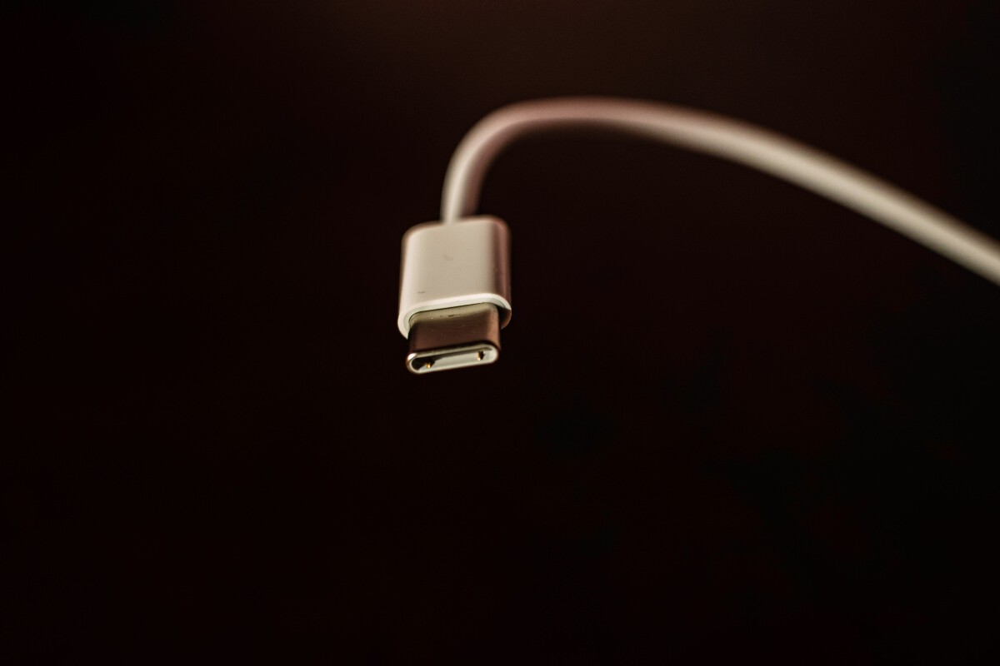

El USB-C es la mayor innovación del iPhone 15, pero no solo por la compatibilidad. La verdadera revolución está en sus otras funciones
Desde ofrecer una mayor velocidad de transferencia hasta tener compatibilidad con HDMI y Ethernet
Uno de los aspectos más celebrados del iPhone 15 fue la introducción del USB-C. Después de la imposición de la Unión Europea que, en resumidas cuentas, daba como fecha límite diciembre de 2024 para adaptar todos los dispositivos móviles y optar por esta conexión, Apple decidió adelantarse e introducirla con su nueva línea de teléfonos inteligentes. Y, aunque muchos se hayan quedado en la superficie de esta decisión, lo cierto es que es una de las innovaciones que más hay que celebrar de todas las que ha introducido la compañía en su historia reciente. Apple necesita ser menos Apple y más Valve si quiere triunfar en el videojuego; y eso conlleva apartarse de sus viejas actitudes En 3D Juegos Apple necesita ser menos Apple y más Valve si quiere triunfar en el videojuego; y eso conlleva apartarse de sus viejas actitudes, Como señala JeuxVideo en una reciente publicación, el USB-C proporciona una conectividad más fluida en todos los modelos del iPhone 15. Además, esta no es la única ventaja del conector, ya que también da la posibilidad a la línea Pro y Pro Max de disfrutar de la compatibilidad con USB-3, una opción que garantiza transferencias de hasta 10 GB/s. Y, de hecho, apostar por el USB-C hace que, por primera vez, los dispositivos de Apple tengan cargador universal y los usuarios puedan aprovecharse de esto para sus terminales.
Todas las ventajas del USB-C del iPhone 15
Junto a todo lo señalado, el portal francés también hace hincapié en que el iPhone es capaz de gestionar automáticamente la energía en caso de que se utilice un adaptador de corriente con una potencia mayor a la requerida. De esta forma, el puerto USB-C peude recibir hasta 27 W y es capaz de suministrar una unidad cercana a los 4,5 W. Además, este conector simplifica aún más la reproducción en pantallas externas gracias a los cables USB-C a HDMI. Por último, también permite que se pueda conectar directamente a un disco duro, unidad SSD o tarjeta SD para, desde estos dispositivos de memoria, importar lo que esté en ellos al iPhone (siempre y cuando sean compatibles). A su vez, también se puede disfrutar de la compatibilidad con ethernet a través de los adaptadores USB-C a Ethernet, así como de la nueva conexión con auriculares USB-C, los mismos cables que en iPac y Mac. Por ello, aunque muchos se quedaron en la superficie, la iniciativa de Apple de apostar por el USB-C trae consigo multitud de mejoras.